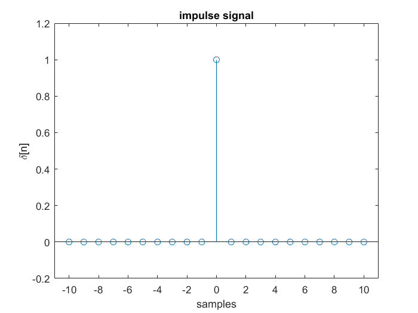
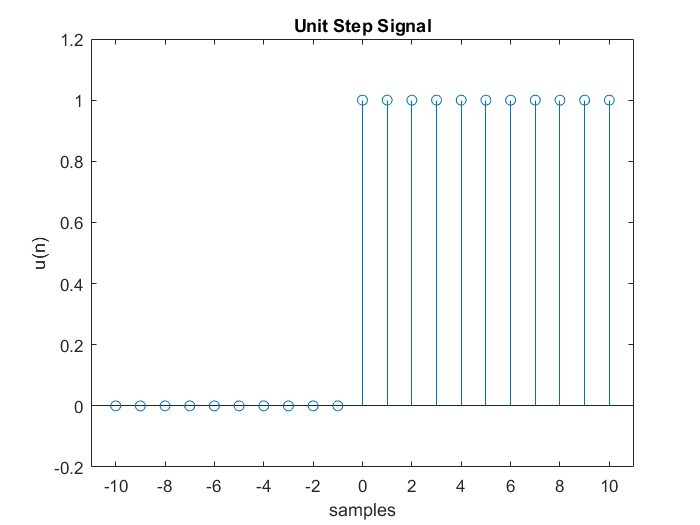
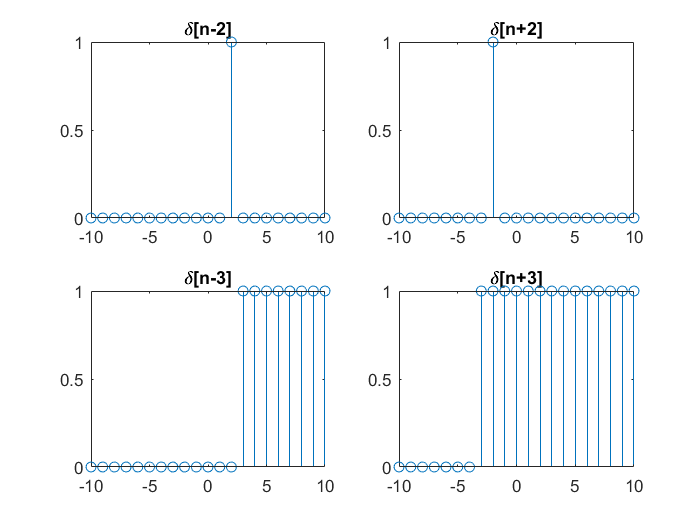
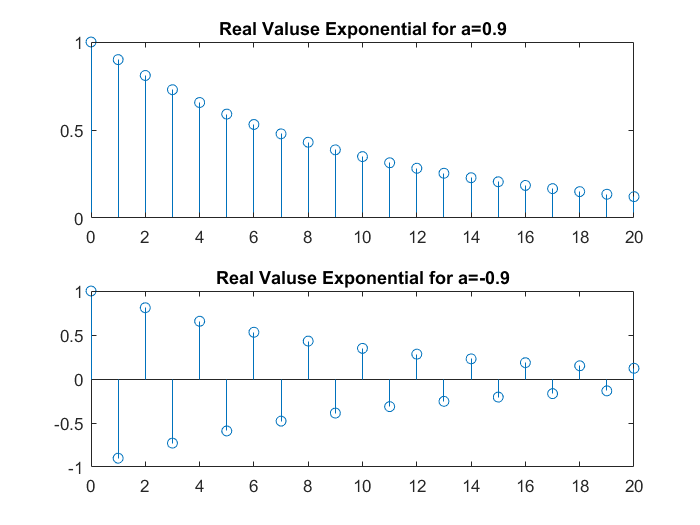
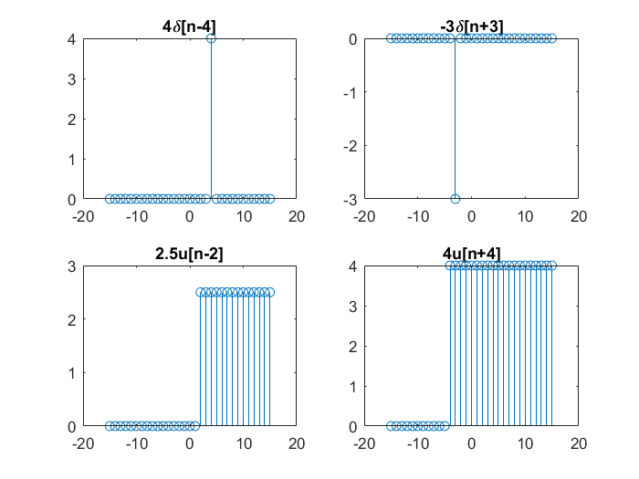
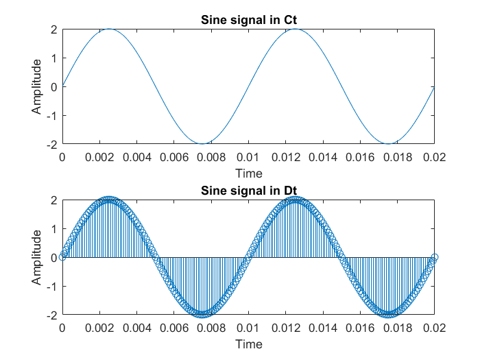
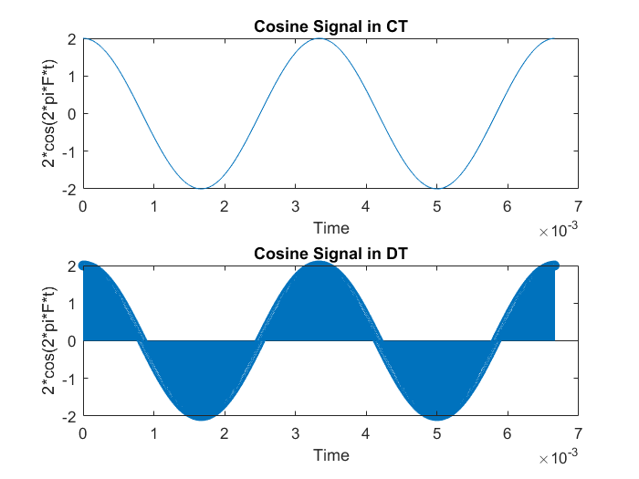
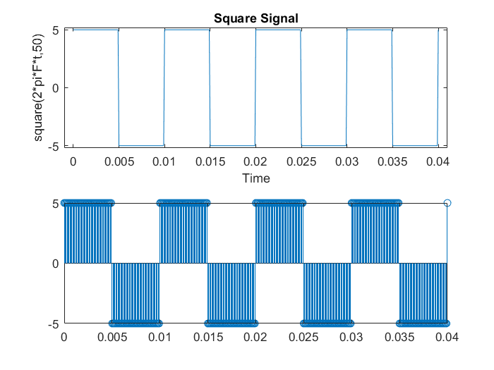
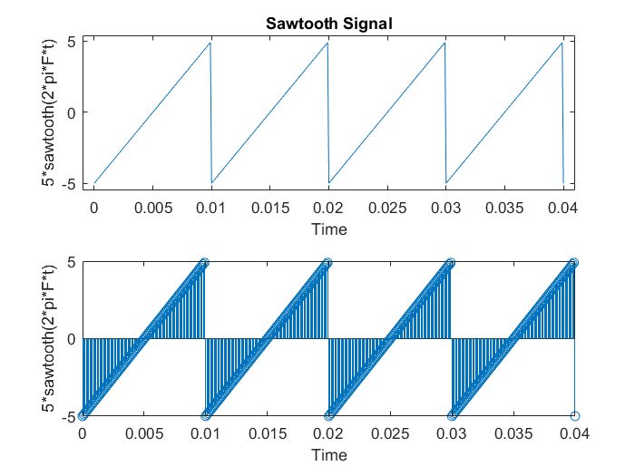
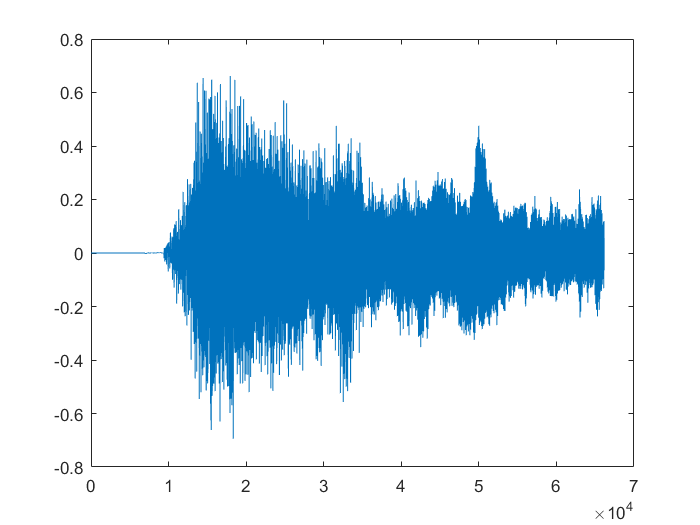

Lab 01 : To generate Discrete Time Signal
Name : Pawan Dilip Sorte Roll Number : 63 Batch : B4 Date: 18/04/2023 and 25/04/2023
Contents
Impulse Signal
n0 = 0; n1 = -10; n2 = 10; [x,n]= impulseSeq(n0, n1, n2); figure(1) stem(n,x); axis([min(n)-1, max(n)+1, min(x)-0.2, max(x)+0.2]) title('impulse signal') xlabel('samples') ylabel('\delta[n]') % function [x,n] = impulseSeq(n0, n1, n2) % % if n0<n1 || n0>n2 % error('The Value of reference point is wrong') % end % % n = n1:n2; % x = (n == n0); % end
Unit Step Signal
n0 = 0; n1 = -10; n2 = 10; [x,n]= UnitStepSeq(n0, n1, n2); figure(2) stem(n,x); axis([min(n)-1, max(n)+1, min(x)-0.2, max(x)+0.2]) title('Unit Step Signal') xlabel('samples') ylabel('u(n)') % function [x,n] = UnitStepSeq(n0, n1, n2) % if n0<n1 || n0>n2 % error('The Value of reference is wrong') % end % n = n1:n2 % x = (n >= n0) % end
n =
Columns 1 through 13
-10 -9 -8 -7 -6 -5 -4 -3 -2 -1 0 1 2
Columns 14 through 21
3 4 5 6 7 8 9 10
x =
1×21 logical array
Columns 1 through 19
0 0 0 0 0 0 0 0 0 0 1 1 1 1 1 1 1 1 1
Columns 20 through 21
1 1
 Exercise - 1
[x1,n]= impulseSeq(2, n1, n2); [x2,n]= impulseSeq(-2, n1, n2); [x3,n]= UnitStepSeq(3, n1, n2); [x4,n]= UnitStepSeq(-3, n1, n2); figure(3) subplot(2,2,1) stem(n,x1) title('\delta[n-2]') subplot(2,2,2) stem(n,x2) title('\delta[n+2]') subplot(2,2,3) stem(n,x3) title('\delta[n-3]') subplot(2,2,4) stem(n,x4) title('\delta[n+3]')
n =
Columns 1 through 13
-10 -9 -8 -7 -6 -5 -4 -3 -2 -1 0 1 2
Columns 14 through 21
3 4 5 6 7 8 9 10
x =
1×21 logical array
Columns 1 through 19
0 0 0 0 0 0 0 0 0 0 0 0 0 1 1 1 1 1 1
Columns 20 through 21
1 1
n =
Columns 1 through 13
-10 -9 -8 -7 -6 -5 -4 -3 -2 -1 0 1 2
Columns 14 through 21
3 4 5 6 7 8 9 10
x =
1×21 logical array
Columns 1 through 19
0 0 0 0 0 0 0 1 1 1 1 1 1 1 1 1 1 1 1
Columns 20 through 21
1 1
 Real Value Exponential Signal
n = 0:20; x5 = 0.9.^n; x6 = (-0.9).^n; figure(4) subplot(2,1,1) stem(n,x5) title('Real Valuse Exponential for a=0.9') subplot(2,1,2) stem(n,x6) title('Real Valuse Exponential for a=-0.9')
Home Assignment - 1
n1 = -15; n2 = 15; [x7,n] = impulseSeq(4, n1, n2); figure(5) subplot(2,2,1) stem(n,4*x7); title('4\delta[n-4]') [x8,n] = impulseSeq(-3, n1, n2); figure(5) subplot(2,2,2) stem(n,-3*x8); title('-3\delta[n+3]') n0=2 [x9,n]= UnitStepSeq(2, n1, n2); figure(5) subplot(2,2,3) stem(n,2.5*x9); title('2.5u[n-2]') [x10,n]= UnitStepSeq(-4, n1, n2); figure(5) subplot(2,2,4) stem(n,4*x10); title('4u[n+4]')
n0 =
2
n =
Columns 1 through 13
-15 -14 -13 -12 -11 -10 -9 -8 -7 -6 -5 -4 -3
Columns 14 through 26
-2 -1 0 1 2 3 4 5 6 7 8 9 10
Columns 27 through 31
11 12 13 14 15
x =
1×31 logical array
Columns 1 through 19
0 0 0 0 0 0 0 0 0 0 0 0 0 0 0 0 0 1 1
Columns 20 through 31
1 1 1 1 1 1 1 1 1 1 1 1
n =
Columns 1 through 13
-15 -14 -13 -12 -11 -10 -9 -8 -7 -6 -5 -4 -3
Columns 14 through 26
-2 -1 0 1 2 3 4 5 6 7 8 9 10
Columns 27 through 31
11 12 13 14 15
x =
1×31 logical array
Columns 1 through 19
0 0 0 0 0 0 0 0 0 0 0 1 1 1 1 1 1 1 1
Columns 20 through 31
1 1 1 1 1 1 1 1 1 1 1 1
 Sine Signal
F = 100; t = 0:0.01*1/F:2/F; x = 2*sin(2*pi*F*t) figure(7) subplot(2,1,1) plot(t,x) xlabel('Time') ylabel('Amplitude') title('Sine signal in Ct') subplot(2,1,2) stem(t,x) xlabel('Time') ylabel('Amplitude') title('Sine signal in Dt')
x =
Columns 1 through 7
0 0.1256 0.2507 0.3748 0.4974 0.6180 0.7362
Columns 8 through 14
0.8516 0.9635 1.0717 1.1756 1.2748 1.3691 1.4579
Columns 15 through 21
1.5410 1.6180 1.6887 1.7526 1.8097 1.8596 1.9021
Columns 22 through 28
1.9372 1.9646 1.9842 1.9961 2.0000 1.9961 1.9842
Columns 29 through 35
1.9646 1.9372 1.9021 1.8596 1.8097 1.7526 1.6887
Columns 36 through 42
1.6180 1.5410 1.4579 1.3691 1.2748 1.1756 1.0717
Columns 43 through 49
0.9635 0.8516 0.7362 0.6180 0.4974 0.3748 0.2507
Columns 50 through 56
0.1256 0.0000 -0.1256 -0.2507 -0.3748 -0.4974 -0.6180
Columns 57 through 63
-0.7362 -0.8516 -0.9635 -1.0717 -1.1756 -1.2748 -1.3691
Columns 64 through 70
-1.4579 -1.5410 -1.6180 -1.6887 -1.7526 -1.8097 -1.8596
Columns 71 through 77
-1.9021 -1.9372 -1.9646 -1.9842 -1.9961 -2.0000 -1.9961
Columns 78 through 84
-1.9842 -1.9646 -1.9372 -1.9021 -1.8596 -1.8097 -1.7526
Columns 85 through 91
-1.6887 -1.6180 -1.5410 -1.4579 -1.3691 -1.2748 -1.1756
Columns 92 through 98
-1.0717 -0.9635 -0.8516 -0.7362 -0.6180 -0.4974 -0.3748
Columns 99 through 105
-0.2507 -0.1256 -0.0000 0.1256 0.2507 0.3748 0.4974
Columns 106 through 112
0.6180 0.7362 0.8516 0.9635 1.0717 1.1756 1.2748
Columns 113 through 119
1.3691 1.4579 1.5410 1.6180 1.6887 1.7526 1.8097
Columns 120 through 126
1.8596 1.9021 1.9372 1.9646 1.9842 1.9961 2.0000
Columns 127 through 133
1.9961 1.9842 1.9646 1.9372 1.9021 1.8596 1.8097
Columns 134 through 140
1.7526 1.6887 1.6180 1.5410 1.4579 1.3691 1.2748
Columns 141 through 147
1.1756 1.0717 0.9635 0.8516 0.7362 0.6180 0.4974
Columns 148 through 154
0.3748 0.2507 0.1256 0.0000 -0.1256 -0.2507 -0.3748
Columns 155 through 161
-0.4974 -0.6180 -0.7362 -0.8516 -0.9635 -1.0717 -1.1756
Columns 162 through 168
-1.2748 -1.3691 -1.4579 -1.5410 -1.6180 -1.6887 -1.7526
Columns 169 through 175
-1.8097 -1.8596 -1.9021 -1.9372 -1.9646 -1.9842 -1.9961
Columns 176 through 182
-2.0000 -1.9961 -1.9842 -1.9646 -1.9372 -1.9021 -1.8596
Columns 183 through 189
-1.8097 -1.7526 -1.6887 -1.6180 -1.5410 -1.4579 -1.3691
Columns 190 through 196
-1.2748 -1.1756 -1.0717 -0.9635 -0.8516 -0.7362 -0.6180
Columns 197 through 201
-0.4974 -0.3748 -0.2507 -0.1256 -0.0000
 Cosine Signal
F = 300; t = 0:0.003*1/F:2/F; x = 2*cos(2*pi*F*t) figure(8) subplot(2,1,1) plot(t,x) xlabel('Time') ylabel('2*cos(2*pi*F*t)') title('Cosine Signal in CT') subplot(2,1,2) stem(t,x) xlabel('Time') ylabel('2*cos(2*pi*F*t)') title('Cosine Signal in DT')
x =
Columns 1 through 7
2.0000 1.9996 1.9986 1.9968 1.9943 1.9911 1.9872
Columns 8 through 14
1.9826 1.9773 1.9713 1.9646 1.9572 1.9491 1.9403
Columns 15 through 21
1.9308 1.9206 1.9097 1.8982 1.8860 1.8731 1.8596
Columns 22 through 28
1.8453 1.8305 1.8150 1.7988 1.7820 1.7646 1.7465
Columns 29 through 35
1.7278 1.7086 1.6887 1.6682 1.6471 1.6254 1.6031
Columns 36 through 42
1.5803 1.5569 1.5330 1.5085 1.4835 1.4579 1.4319
Columns 43 through 49
1.4053 1.3782 1.3507 1.3226 1.2941 1.2651 1.2357
Columns 50 through 56
1.2059 1.1756 1.1449 1.1138 1.0822 1.0503 1.0181
Columns 57 through 63
0.9855 0.9525 0.9192 0.8855 0.8516 0.8173 0.7827
Columns 64 through 70
0.7479 0.7128 0.6775 0.6419 0.6061 0.5700 0.5338
Columns 71 through 77
0.4974 0.4608 0.4240 0.3871 0.3500 0.3129 0.2756
Columns 78 through 84
0.2382 0.2007 0.1632 0.1256 0.0879 0.0503 0.0126
Columns 85 through 91
-0.0251 -0.0628 -0.1005 -0.1381 -0.1757 -0.2132 -0.2507
Columns 92 through 98
-0.2880 -0.3253 -0.3624 -0.3994 -0.4363 -0.4730 -0.5095
Columns 99 through 105
-0.5459 -0.5821 -0.6180 -0.6538 -0.6893 -0.7246 -0.7596
Columns 106 through 112
-0.7943 -0.8288 -0.8629 -0.8968 -0.9303 -0.9635 -0.9964
Columns 113 through 119
-1.0289 -1.0610 -1.0928 -1.1242 -1.1551 -1.1857 -1.2159
Columns 120 through 126
-1.2456 -1.2748 -1.3037 -1.3320 -1.3599 -1.3873 -1.4142
Columns 127 through 133
-1.4406 -1.4665 -1.4919 -1.5167 -1.5410 -1.5648 -1.5880
Columns 134 through 140
-1.6106 -1.6327 -1.6542 -1.6751 -1.6954 -1.7151 -1.7341
Columns 141 through 147
-1.7526 -1.7705 -1.7877 -1.8043 -1.8202 -1.8355 -1.8502
Columns 148 through 154
-1.8641 -1.8775 -1.8901 -1.9021 -1.9134 -1.9241 -1.9340
Columns 155 through 161
-1.9433 -1.9518 -1.9597 -1.9669 -1.9734 -1.9792 -1.9842
Columns 162 through 168
-1.9886 -1.9923 -1.9952 -1.9975 -1.9990 -1.9998 -2.0000
Columns 169 through 175
-1.9994 -1.9981 -1.9961 -1.9933 -1.9899 -1.9858 -1.9809
Columns 176 through 182
-1.9754 -1.9691 -1.9622 -1.9545 -1.9462 -1.9372 -1.9274
Columns 183 through 189
-1.9170 -1.9060 -1.8942 -1.8818 -1.8687 -1.8549 -1.8405
Columns 190 through 196
-1.8254 -1.8097 -1.7933 -1.7763 -1.7586 -1.7404 -1.7215
Columns 197 through 203
-1.7020 -1.6819 -1.6612 -1.6399 -1.6180 -1.5956 -1.5726
Columns 204 through 210
-1.5490 -1.5249 -1.5002 -1.4750 -1.4493 -1.4231 -1.3963
Columns 211 through 217
-1.3691 -1.3414 -1.3132 -1.2845 -1.2554 -1.2258 -1.1958
Columns 218 through 224
-1.1654 -1.1345 -1.1033 -1.0717 -1.0396 -1.0072 -0.9745
Columns 225 through 231
-0.9414 -0.9080 -0.8742 -0.8402 -0.8058 -0.7712 -0.7362
Columns 232 through 238
-0.7011 -0.6656 -0.6300 -0.5941 -0.5580 -0.5217 -0.4852
Columns 239 through 245
-0.4485 -0.4117 -0.3748 -0.3377 -0.3005 -0.2631 -0.2257
Columns 246 through 252
-0.1882 -0.1507 -0.1130 -0.0754 -0.0377 -0.0000 0.0377
Columns 253 through 259
0.0754 0.1130 0.1507 0.1882 0.2257 0.2631 0.3005
Columns 260 through 266
0.3377 0.3748 0.4117 0.4485 0.4852 0.5217 0.5580
Columns 267 through 273
0.5941 0.6300 0.6656 0.7011 0.7362 0.7712 0.8058
Columns 274 through 280
0.8402 0.8742 0.9080 0.9414 0.9745 1.0072 1.0396
Columns 281 through 287
1.0717 1.1033 1.1345 1.1654 1.1958 1.2258 1.2554
Columns 288 through 294
1.2845 1.3132 1.3414 1.3691 1.3963 1.4231 1.4493
Columns 295 through 301
1.4750 1.5002 1.5249 1.5490 1.5726 1.5956 1.6180
Columns 302 through 308
1.6399 1.6612 1.6819 1.7020 1.7215 1.7404 1.7586
Columns 309 through 315
1.7763 1.7933 1.8097 1.8254 1.8405 1.8549 1.8687
Columns 316 through 322
1.8818 1.8942 1.9060 1.9170 1.9274 1.9372 1.9462
Columns 323 through 329
1.9545 1.9622 1.9691 1.9754 1.9809 1.9858 1.9899
Columns 330 through 336
1.9933 1.9961 1.9981 1.9994 2.0000 1.9998 1.9990
Columns 337 through 343
1.9975 1.9952 1.9923 1.9886 1.9842 1.9792 1.9734
Columns 344 through 350
1.9669 1.9597 1.9518 1.9433 1.9340 1.9241 1.9134
Columns 351 through 357
1.9021 1.8901 1.8775 1.8641 1.8502 1.8355 1.8202
Columns 358 through 364
1.8043 1.7877 1.7705 1.7526 1.7341 1.7151 1.6954
Columns 365 through 371
1.6751 1.6542 1.6327 1.6106 1.5880 1.5648 1.5410
Columns 372 through 378
1.5167 1.4919 1.4665 1.4406 1.4142 1.3873 1.3599
Columns 379 through 385
1.3320 1.3037 1.2748 1.2456 1.2159 1.1857 1.1551
Columns 386 through 392
1.1242 1.0928 1.0610 1.0289 0.9964 0.9635 0.9303
Columns 393 through 399
0.8968 0.8629 0.8288 0.7943 0.7596 0.7246 0.6893
Columns 400 through 406
0.6538 0.6180 0.5821 0.5459 0.5095 0.4730 0.4363
Columns 407 through 413
0.3994 0.3624 0.3253 0.2880 0.2507 0.2132 0.1757
Columns 414 through 420
0.1381 0.1005 0.0628 0.0251 -0.0126 -0.0503 -0.0879
Columns 421 through 427
-0.1256 -0.1632 -0.2007 -0.2382 -0.2756 -0.3129 -0.3500
Columns 428 through 434
-0.3871 -0.4240 -0.4608 -0.4974 -0.5338 -0.5700 -0.6061
Columns 435 through 441
-0.6419 -0.6775 -0.7128 -0.7479 -0.7827 -0.8173 -0.8516
Columns 442 through 448
-0.8855 -0.9192 -0.9525 -0.9855 -1.0181 -1.0503 -1.0822
Columns 449 through 455
-1.1138 -1.1449 -1.1756 -1.2059 -1.2357 -1.2651 -1.2941
Columns 456 through 462
-1.3226 -1.3507 -1.3782 -1.4053 -1.4319 -1.4579 -1.4835
Columns 463 through 469
-1.5085 -1.5330 -1.5569 -1.5803 -1.6031 -1.6254 -1.6471
Columns 470 through 476
-1.6682 -1.6887 -1.7086 -1.7278 -1.7465 -1.7646 -1.7820
Columns 477 through 483
-1.7988 -1.8150 -1.8305 -1.8453 -1.8596 -1.8731 -1.8860
Columns 484 through 490
-1.8982 -1.9097 -1.9206 -1.9308 -1.9403 -1.9491 -1.9572
Columns 491 through 497
-1.9646 -1.9713 -1.9773 -1.9826 -1.9872 -1.9911 -1.9943
Columns 498 through 504
-1.9968 -1.9986 -1.9996 -2.0000 -1.9996 -1.9986 -1.9968
Columns 505 through 511
-1.9943 -1.9911 -1.9872 -1.9826 -1.9773 -1.9713 -1.9646
Columns 512 through 518
-1.9572 -1.9491 -1.9403 -1.9308 -1.9206 -1.9097 -1.8982
Columns 519 through 525
-1.8860 -1.8731 -1.8596 -1.8453 -1.8305 -1.8150 -1.7988
Columns 526 through 532
-1.7820 -1.7646 -1.7465 -1.7278 -1.7086 -1.6887 -1.6682
Columns 533 through 539
-1.6471 -1.6254 -1.6031 -1.5803 -1.5569 -1.5330 -1.5085
Columns 540 through 546
-1.4835 -1.4579 -1.4319 -1.4053 -1.3782 -1.3507 -1.3226
Columns 547 through 553
-1.2941 -1.2651 -1.2357 -1.2059 -1.1756 -1.1449 -1.1138
Columns 554 through 560
-1.0822 -1.0503 -1.0181 -0.9855 -0.9525 -0.9192 -0.8855
Columns 561 through 567
-0.8516 -0.8173 -0.7827 -0.7479 -0.7128 -0.6775 -0.6419
Columns 568 through 574
-0.6061 -0.5700 -0.5338 -0.4974 -0.4608 -0.4240 -0.3871
Columns 575 through 581
-0.3500 -0.3129 -0.2756 -0.2382 -0.2007 -0.1632 -0.1256
Columns 582 through 588
-0.0879 -0.0503 -0.0126 0.0251 0.0628 0.1005 0.1381
Columns 589 through 595
0.1757 0.2132 0.2507 0.2880 0.3253 0.3624 0.3994
Columns 596 through 602
0.4363 0.4730 0.5095 0.5459 0.5821 0.6180 0.6538
Columns 603 through 609
0.6893 0.7246 0.7596 0.7943 0.8288 0.8629 0.8968
Columns 610 through 616
0.9303 0.9635 0.9964 1.0289 1.0610 1.0928 1.1242
Columns 617 through 623
1.1551 1.1857 1.2159 1.2456 1.2748 1.3037 1.3320
Columns 624 through 630
1.3599 1.3873 1.4142 1.4406 1.4665 1.4919 1.5167
Columns 631 through 637
1.5410 1.5648 1.5880 1.6106 1.6327 1.6542 1.6751
Columns 638 through 644
1.6954 1.7151 1.7341 1.7526 1.7705 1.7877 1.8043
Columns 645 through 651
1.8202 1.8355 1.8502 1.8641 1.8775 1.8901 1.9021
Columns 652 through 658
1.9134 1.9241 1.9340 1.9433 1.9518 1.9597 1.9669
Columns 659 through 665
1.9734 1.9792 1.9842 1.9886 1.9923 1.9952 1.9975
Columns 666 through 667
1.9990 1.9998
 Square Waveform
F = 100; % Frequency of Square Wave t = 0:0.01/F:4/F; x = 5*square(2*pi*F*t,50) figure(9) subplot(2,1,1) plot(t,x) axis([min(t)-0.001, max(t)+0.001, min(x)-0.2, max(x)+0.2]) xlabel('Time') ylabel('square(2*pi*F*t,50)') title('Square Signal') subplot(2,1,2) stem(t,x)
x =
Columns 1 through 13
5 5 5 5 5 5 5 5 5 5 5 5 5
Columns 14 through 26
5 5 5 5 5 5 5 5 5 5 5 5 5
Columns 27 through 39
5 5 5 5 5 5 5 5 5 5 5 5 5
Columns 40 through 52
5 5 5 5 5 5 5 5 5 5 5 -5 -5
Columns 53 through 65
-5 -5 -5 -5 -5 -5 -5 -5 -5 -5 -5 -5 -5
Columns 66 through 78
-5 -5 -5 -5 -5 -5 -5 -5 -5 -5 -5 -5 -5
Columns 79 through 91
-5 -5 -5 -5 -5 -5 -5 -5 -5 -5 -5 -5 -5
Columns 92 through 104
-5 -5 -5 -5 -5 -5 -5 -5 -5 5 5 5 5
Columns 105 through 117
5 5 5 5 5 5 5 5 5 5 5 5 5
Columns 118 through 130
5 5 5 5 5 5 5 5 5 5 5 5 5
Columns 131 through 143
5 5 5 5 5 5 5 5 5 5 5 5 5
Columns 144 through 156
5 5 5 5 5 5 5 -5 -5 -5 -5 -5 -5
Columns 157 through 169
-5 -5 -5 -5 -5 -5 -5 -5 -5 -5 -5 -5 -5
Columns 170 through 182
-5 -5 -5 -5 -5 -5 -5 -5 -5 -5 -5 -5 -5
Columns 183 through 195
-5 -5 -5 -5 -5 -5 -5 -5 -5 -5 -5 -5 -5
Columns 196 through 208
-5 -5 -5 -5 -5 5 5 5 5 5 5 5 5
Columns 209 through 221
5 5 5 5 5 5 5 5 5 5 5 5 5
Columns 222 through 234
5 5 5 5 5 5 5 5 5 5 5 5 5
Columns 235 through 247
5 5 5 5 5 5 5 5 5 5 5 5 5
Columns 248 through 260
5 5 5 -5 -5 -5 -5 -5 -5 -5 -5 -5 -5
Columns 261 through 273
-5 -5 -5 -5 -5 -5 -5 -5 -5 -5 -5 -5 -5
Columns 274 through 286
-5 -5 -5 -5 -5 -5 -5 -5 -5 -5 -5 -5 -5
Columns 287 through 299
-5 -5 -5 -5 -5 -5 -5 -5 -5 -5 -5 -5 -5
Columns 300 through 312
-5 5 5 5 5 5 5 5 5 5 5 5 5
Columns 313 through 325
5 5 5 5 5 5 5 5 5 5 5 5 5
Columns 326 through 338
5 5 5 5 5 5 5 5 5 5 5 5 5
Columns 339 through 351
5 5 5 5 5 5 5 5 5 5 5 5 -5
Columns 352 through 364
-5 -5 -5 -5 -5 -5 -5 -5 -5 -5 -5 -5 -5
Columns 365 through 377
-5 -5 -5 -5 -5 -5 -5 -5 -5 -5 -5 -5 -5
Columns 378 through 390
-5 -5 -5 -5 -5 -5 -5 -5 -5 -5 -5 -5 -5
Columns 391 through 401
-5 -5 -5 -5 -5 -5 -5 -5 -5 -5 5
 Sawtooth Waveform
F = 100; t = 0:0.01/F:4/F; x = 5*sawtooth(2*pi*F*t); figure(10) subplot(2,1,1) plot(t,x) axis([min(t)-0.001, max(t)+0.001, min(x)-0.5, max(x)+0.5]) xlabel('Time') ylabel('5*sawtooth(2*pi*F*t)') title('Sawtooth Signal') subplot(2,1,2) stem(t,x) xlabel('Time') ylabel('5*sawtooth(2*pi*F*t)')
Audioread
[y,Fs] = audioread('StarWars3.wav');
StarWars = audioplayer(y,Fs);
play(StarWars);
figure(11)
plot(y)
Warning: Unable to play audio because no audio outputs were found. Warning: Unable to play audio because no audio outputs were found.